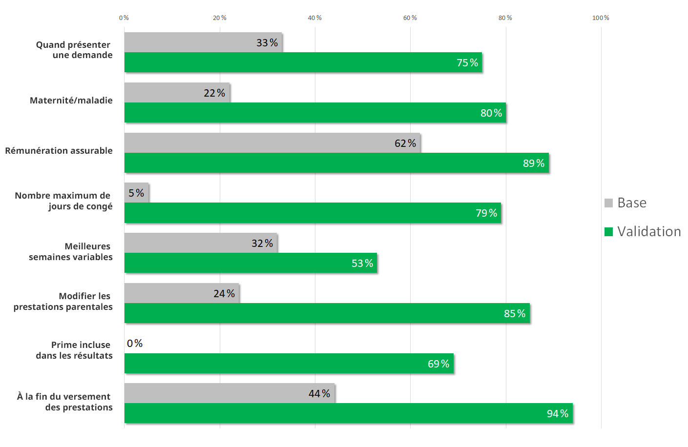

Résumé de recherche : Prestations de maternité et prestations parentales de l’assurance-emploi
Le projet d’optimisation a été entrepris par le Bureau de la transformation numérique (BTN) avec l’étroite collaboration de l’équipe de prestation d’assurance-emploi et de l’équipe de la Politique de l’assurance-emploi de Service Canada, ainsi que l’équipe Web d’Emploi et Développement social Canada (EDSC). Notre but était de rendre les prestations de maternité et les prestations parentales de l’assurance-emploi plus faciles à trouver et à comprendre pour les Canadiens et les Canadiennes qui prévoient agrandir leur famille.
Nous avons examiné beaucoup de sites Web externes lors de notre recherche de découverte. Nous voulions savoir ce qui se dit entre les parents canadiens au sujet du congé de maternité, du congé parental et de la navigation du système de l’AE. Cela nous a permis de comprendre quelles étapes sont perçues comme les plus complexes dans l’accès aux prestations.
Nous avons conclu que les gens ont de la difficulté avec les aspects suivants :
- les conditions d’admissibilité;
- la quantité d’argent à laquelle ils ont droit;
- la durée du congé auquel ils ont droit.
Les analyses de recherche indiquent que les recherches effectuées avec le mot-clé « leave » (congé) sont bien plus nombreuses que les recherches effectuées avec « benefits » (prestations). Cette découverte révèle que ces concepts ne sont pas bien différenciés, même s’ils sont légalement distincts. Le congé est un droit défini dans le Code canadien du travail et dans les lois provinciales sur les normes du travail. Lorsqu’ils sont en congés, des prestations d’assurance-emploi sont versées en argent aux Canadiens et aux Canadiennes qui ont payé des cotisations d’assurance-emploi. Cette somme représente une portion de leurs gains antérieurs.
Lorsque nous avons discuté avec des agents des services de l’AE, nous avons réalisé que de nombreux parents ne comprennent pas qu’ils ne peuvent pas changer d’option de prestation. Par exemple, un parent pourrait choisir l’option des prestations parentales prolongées, afin de passer plus de temps à la maison. Cette option remet 33 % des gains. Certains parents viennent à changer d’idée et décident de changer pour l’option ordinaire, qui remet 55 % des gains sur une période de temps écourtée. Ils ne comprennent pas que leur premier choix est définitif.
De surcroît, ce projet d’optimisation est d’autant plus difficile du fait que nous avions pour tâche d’expliquer les nouvelles prestations de partage parental. Ces nouvelles prestations à prendre ou à laisser ont été lancées en mars 2019. Elles sont seulement disponibles aux partenaires qui partagent leurs prestations parentales d’assurance-emploi. Il peut être difficile de comprendre les options disponibles pour chaque parent et de saisir en quoi les choix d’un parent peuvent affecter les prestations de l’autre.
À la lumière des recherches précédentes, nous savions que les tâches où les gens doivent faire des calculs mathématiques sont particulièrement difficiles pour eux. Les concepts et les termes comme « hours of insurable employment » (heures d’emploi assurable) et « variable best weeks » (meilleures semaines variables) ne sont pas explicites. Ils compliquent la tâche lorsqu’on essaie de déterminer le montant des prestations.
Test de référence et résultats
Nous avons collaboré avec l’équipe de l’AE pour déterminer les scénarios à analyser. Les huit scénarios couvrent de nombreuses circonstances (grossesse à haut-risque, adoption, etc.). Nous avons posé des questions courantes au sujet des prestations et de la façon de les obtenir. Nous avons mis à l’épreuve 22 participants âgés de 25 à 39 ans. Tous les participants occupaient un emploi à temps plein, et aucun d’entre eux n’avait présenté de demande de prestations d’assurance-emploi au cours des cinq dernières années.
Avec un total de 155 essais réalisés pour les 8 scénarios, les participants sont arrivés à la bonne page dans 46 % des cas. Les participants sont parvenus à accomplir les tâches que dans 28 % des cas.
Effort de conception
Après avoir analysé les preuves vidéo obtenues lors des tests de référence, nous avons conçu un prototype dans GitHub. Nous avons utilisé le même modèle de lancement de service que celui que nous avons utilisé pour le projet d’optimisation des prestations d’assurance-emploi pour proches aidants.
Nous avons itéré le prototype dans le cadre d’une série d’ateliers intensifs réalisée en collaboration avec des experts en AE. En voici les caractéristiques clés :
- Un tableau résumant les prestations offertes
- Souligne les différences entre les prestations ordinaires et prolongées
- Des exemples sous format d’équation mathématique, afin de montrer le calcul
- Illustre les différences entre les choix de deux familles différentes
- Un estimateur qui se fonde sur les salaires, la date de début et le choix de prestation
- Permet aux gens d’insérer leurs préférences et recevoir une estimation de temps (moment auquel les prestations prennent fin) et d’argent (montant qui sera reçu)
- Permet aux gens de constater les répercussions de leurs choix
- Une section pour les circonstances particulières
- Aide les gens à comprendre quoi faire dans le cas de complications médicales
- Explique les prestations associées à l’accouchement multiple, aux mères porteuses, ou autres situations particulières
Nous avons continué à itérer le prototype tout au long des essais. Nous avons observé attentivement chacune des séances pour identifier les aspects qui causent des difficultés et nous avons mis en œuvre des correctifs. Cette approche a amélioré de manière significative la conception du projet et les résultats des essais.
Résultats des essais de validation
Notre objectif était d’améliorer la repérabilité et la réussite des tâches d’au moins 20 points de pourcentage, ou de dépasser 80 % pour les deux mesures. Lors de la ronde de validation, nous avons mis à l’essai 20 participants, qui ont réalisé un total de 167 tests de rendement des tâches.
- Les participants sont arrivés à la bonne page dans 90 % des cas (une augmentation de 44 points de pourcentage)
- Les participants ont réussi leurs tâches dans 78 % des cas (une augmentation de 50 points de pourcentage)
Ce graphique montre la mesure de référence au début du projet par rapport à la mesure de validation du prototype redessiné par l'équipe de projet.
Taux de réussite des tâches – tableau
| Tâche | Base | Validation |
|---|---|---|
| Quand présenter une demande | 33 % | 75 % |
| Maternité/maladie | 22 % | 80 % |
| Rémunération assurable | 62 % | 89 % |
| Nombre maximum de jours de congé | 5 % | 79 % |
| Meilleures semaines variables | 32 % | 53 % |
| Modifier les prestations parentales | 24 % | 85 % |
| Prime incluse dans les résultats | 0 % | 69 % |
| À la fin du versement des prestations | 44 % | 94 % |
Ce que nous avons fait pour aider les gens à réussir
Correspondre aux attentes
Nous avons réorganisé et regroupé le contenu de sorte que le contenu de chaque page soit clairement lié à l’en-tête de la page.
Réduction de la complexité du contenu
Afin d’améliorer la lecture rapide, nous avons ajouté des en-têtes et supprimé des renseignements superflus. Les détails techniques ont été cachés au moyen du modèle afficher-masquer. Les pages évitent ainsi d’avoir l’air trop complexes. Nous avons dirigé les participants vers des concepts et des termes particuliers au domaine de l’assurance-emploi (comme les « meilleures semaines »), nous avons expliqué ces concepts clairement et les avons utilisés avec modération.
Éviter de demander aux gens de faire des calculs
Nous avons conçu un estimateur simple permettant aux gens de voir les répercussions de leurs choix. L’estimateur demande un minimum d’intrants pour produire une réponse pratique et détaillée permettant de faire des choix plus éclairés.
Utiliser les chiffres avec soin
Les conditions d’admissibilité et le droit aux prestations se fondent tous deux sur le nombre de semaines. Nous avons fait très attention de présenter les chiffres de façon à faire plus facilement la différence entre ces deux notions.
Montrer le calcul


Description détaillée
On y montre d’abord une section du contenu de la page original. On y encadre en rouge un énoncé indiquant qu’il y a un maximum de 15 semaines pour les prestations de maternité de l’AE. Un autre énoncé est encadré en rouge, indiquant un maximum de 61 semaines pour les prestations parentales.
Sous cette capture d’écran s’en trouve une autre, celle de la version équivalente tirée du prototype. Une simple équation mathématique est encadrée de vert. L’équation montre 15 semaines de prestations de maternité plus 61 semaines de prestations parentales prolongées est égal à un total de 76 semaines pour Janelle.
Demander les résultats de recherche
Si vous souhaitez voir les conclusions de recherche détaillés de ce projet, envoyez-nous un courriel à dto.btn@tbs-sct.gc.ca.
Dites-nous ce que vous en pensez
Écrivez-nous un gazouillis en utilisant le mot-clic #Canadapointca.
Explorer davantage
- Consultez les pages mises à jour : Prestations de maternité et prestations parentales de l’assurance-emploi
- Lisez notre billet de blogue : Six conseils en matière de conception de contenu tirées de nos projets d’optimisation sur les prêts étudiants et les prestations parentales
- Consultez les aperçus de nos autres projets avec nos partenaires